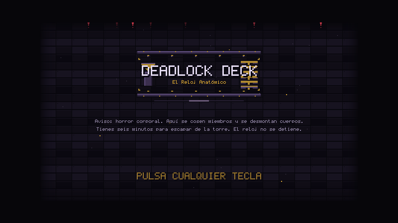
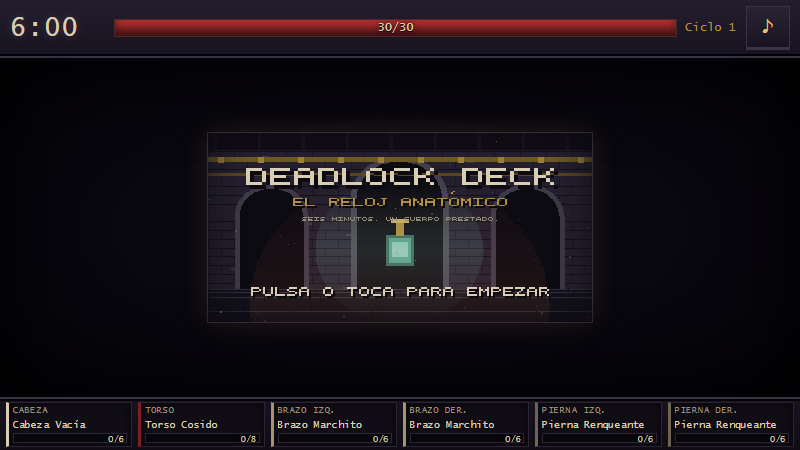
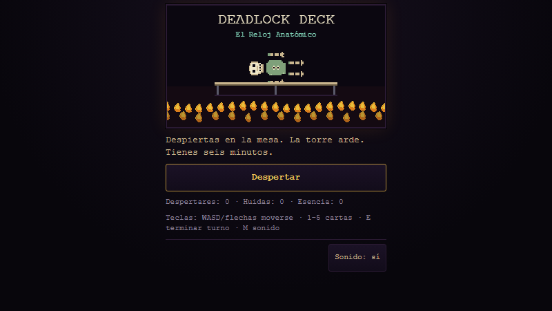
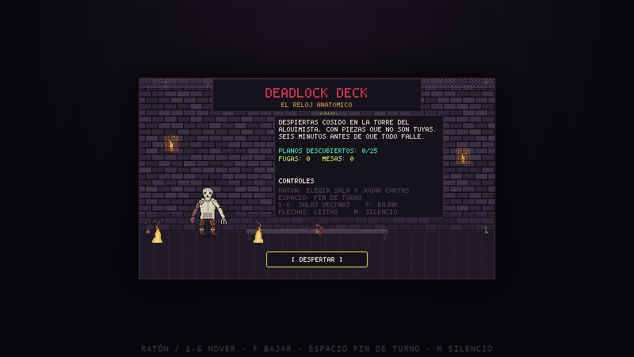
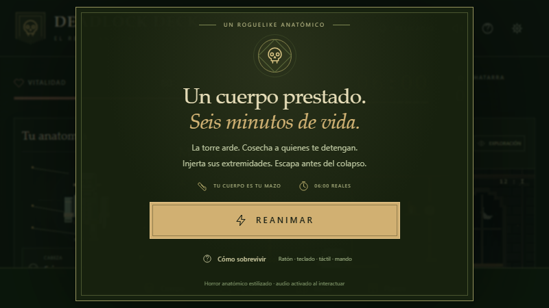

DEADLOCK DECK ARENA
Un prompt · Cinco parejas de agentes · Cinco juegos One prompt · Five agent pairings · Five games
El mismo concepto de juego se entregó cinco veces, palabra por palabra, a cinco combinaciones distintas de modelo orquestador y modelo trabajador. Nadie intervino durante la construcción. Esto es lo que devolvió cada una. The same game concept was handed over five times, word for word, to five different combinations of orchestrator model and worker model. Nobody stepped in while they built. This is what each one handed back.
Comparar las cincoCompare all five Cómo se hizoHow it was run
Condiciones idénticasIdentical conditions
- El mismo promptThe same prompt Sin una coma de diferencia entre las cinco tiradas. Not one comma differed between the five runs.
- Esfuerzo máximoMaximum effort Cada orquestador corrió en xhigh, o el tope disponible en DeepSeek. Every orchestrator ran at xhigh, or DeepSeek's own ceiling.
- Sin dueñoNo owner El orquestador dirigió a sus trabajadores solo, de principio a fin. The orchestrator drove its workers alone, start to finish.
- Mismo encargoSame brief Mazo anatómico, degradación térmica, torre procedural, seis minutos. Anatomical deck, heat decay, procedural tower, six minutes.
- Sin dependenciasNo dependencies Los cinco salieron como HTML, CSS y JavaScript sin compilar. All five came out as plain HTML, CSS and JavaScript, no build step.
Leer el prompt completoRead the full prompt
Texto original, sin traducir: es la evidencia del experimento. Original text, untranslated — it is the experiment's evidence.
Eres el orquestador principal de este proyecto, vas a usar trabajadores X (el effort que tu elijas) para construirlo, el juego debe ser sencillo, no incluyas tests ni cosas complejas, sigue el concepto del juego al pie de la letra sin omitir nada. Tu seras quien este pendiente de los trabajadores, decirles que hacer, y organizarlos apropiadamente. Funcionaras de manera totalmente autonoma sin interaccion ni intervencion del dueño. **Deadlock Deck: El Reloj Anatómico** **Sinopsis:** Asume el papel de una abominación recién reanimada en un laboratorio alquímico al borde del colapso. Tienes exactamente 6 minutos para escapar de la torre en llamas. El laboratorio es un laberinto en constante cambio, lleno de monstruosidades y científicos corruptos que buscan detenerte. Tu única esperanza de supervivencia radica en recolectar partes del cuerpo de tus enemigos caídos e injertarlas en ti mismo para obtener nuevas habilidades y escapar antes de que el tiempo se acabe. **Mecánicas Principales:** * **Construcción de Mazos Anatómica:** Tu mazo de cartas no es un mazo tradicional; es tu cuerpo. Cada extremidad que injertes (cabeza, torso, 2 brazos, 2 piernas) tiene un conjunto único de cartas asociadas. Cambiar tus extremidades cambia drásticamente tu estilo de juego. * **Degradación Térmica:** Usar cartas poderosas sobrecalienta y desgasta tus extremidades. Si una extremidad se rompe, pierdes las cartas asociadas y debes luchar con un muñón hasta que puedas encontrar un reemplazo. * **Bucle de Muerte y Reinicio de 6 Minutos:** Tienes 6 minutos para escapar. Si mueres o se acaba el tiempo, tu espíritu se transporta a una nueva mesa de disección con un nuevo cuerpo base. Retienes los planos anatómicos descubiertos, pero la torre se regenera de forma procesal. **Objetivos del Jugador:** 1. **Explorar:** Navegar por los pasillos procesales de la torre, recolectando recursos y evitando trampas. 2. **Combatir:** Participar en combates rápidos y por turnos utilizando cartas basadas en tus extremidades. 3. **Cosechar:** Derrotar enemigos y recolectar sus extremidades para mejorar tu mazo. 4. **Escapar:** Llegar a la salida de la torre antes de que el reloj marque las 6 minutos. **Estilo Visual:** * **Gótico Alquímico:** Una estética oscura y atmosférica que combina elementos del horror gótico con la alquimia y el steampunk. * **Pixel Art:** Un estilo de arte de píxeles detallado y expresivo que captura la esencia de los juegos retro. **Sonido:** * **Banda Sonora Sintetizada Ominosa:** Una banda sonora que combina elementos de música electrónica y orquestal para crear una atmósfera de misterio y tensión. * **Efectos de Sonido Guturales:** Efectos de sonido realistas y viscerales que sumergen al jugador en el mundo del juego. **Plataformas:** * PC, consolas de última generación y dispositivos móviles. **Público Objetivo:** * Fans de los juegos de construcción de mazos, roguelikes y juegos de supervivencia. **Potencial de Monetización:** * Juego gratuito con microtransacciones para cosméticos y desbloqueo de contenido. **Estado del Desarrollo:** * Concepto en fase de preproducción. **Pasos Siguientes:** 1. **Desarrollar un prototipo de combate:** Crear una versión básica del sistema de combate de construcción de mazos anatómica. 2. **Diseñar los planos anatómicos:** Crear un conjunto variado de extremidades y cartas para que los jugadores experimenten. 3. **Generar la torre de forma procesal:** Implementar un sistema para generar la torre de forma procesal. 4. **Implementar el sistema de tiempo:** Integrar el reloj de 6 minutos en el juego. 5. **Crear arte y sonido:** Desarrollar los activos visuales y de audio para el juego. **Conclusión:** **Deadlock Deck: El Reloj Anatómico** es un juego de construcción de mazos innovador y desafiante que combina mecánicas de roguelike y supervivencia con un giro único y macabro. Con su estética gótica alquímica y su jugabilidad adictiva, Deadlock Deck tiene el potencial de ser un éxito entre los fans de los juegos independientes.
Las cinco construccionesThe five builds
-

Orquestador → TrabajadorOrchestrator → Worker
DeepSeek → Opus 5
La más grande de las cinco: 39 archivos de código y casi 11 000 líneas. Un solo canvas de 640×360 lleva todo el juego, con tienda de cosméticos, códex de planos y un aviso de contenido antes de empezar. The largest of the five: 39 code files and nearly 11,000 lines. A single 640×360 canvas carries the whole game, plus a cosmetics shop, a blueprint codex and a content warning before the run starts.
- 44 archivosfiles
- 10 957 líneaslines
- canvas 640×360
Abrir sola la construcción AOpen alone build A Código de la construcción ASource of build A
-

Orquestador → TrabajadorOrchestrator → Worker
Opus 5 → DeepSeek
Escena en canvas de 384×216 metida dentro de un HUD hecho de DOM: el reloj, la barra de vida y las seis ranuras anatómicas son elementos reales de la página. De aquí salen la paleta y los botones de este sitio. A 384×216 canvas scene set inside a HUD made of DOM: the clock, the health bar and the six anatomy slots are real page elements. This hub's palette and buttons come from here.
- 14 archivosfiles
- 4 460 líneaslines
- canvas + DOM
Abrir sola la construcción BOpen alone build B Código de la construcción BSource of build B
-

Orquestador → TrabajadoresOrchestrator → Workers
Fable 5.1 → DeepSeek + Opus 5
La única tirada con dos modelos de trabajador a la vez. Canvas de 320×180 para la escena y DOM para todo lo demás; los sprites se generan en memoria al arrancar, sin un solo archivo de imagen. The only run with two worker models at once. A 320×180 canvas for the scene, DOM for everything else; sprites are generated in memory at boot, without a single image file.
- 14 archivosfiles
- 3 964 líneaslines
- canvas 320×180
Abrir sola la construcción COpen alone build C Código de la construcción CSource of build C
-

Orquestador → TrabajadorOrchestrator → Worker
Opus 5 → Opus 5
La única construcción sobre módulos ES, y la única que trae su propio servidor estático. Un canvas se escala en múltiplos enteros para que el píxel nunca se deforme. The only build on ES modules, and the only one that ships its own static server. One canvas scales in whole multiples so the pixels never smear.
- 17 archivosfiles
- 5 206 líneaslines
- módulos ESES modules
Abrir sola la construcción DOpen alone build D Código de la construcción DSource of build D
-

Orquestador → TrabajadorOrchestrator → Worker
Astra → Astra
La que se sale del pixel art: una interfaz oscura y verde con tipografía serif, más cerca de una aplicación que de un juego retro. También entrega el juego entero dentro de un único archivo HTML. The one that breaks with the pixel art: a dark green interface with serif type, closer to an app than to a retro game. It also ships the whole game inside one single HTML file.
- 10 archivosfiles
- 2 978 líneaslines
- sin canvas en la páginano canvas on the page
Abrir sola la construcción EOpen alone build E Código de la construcción ESource of build E
Las cuentas de archivos y líneas son de los archivos JS, CSS y HTML de cada carpeta, medidas el 16 de septiembre de 2026. Son tamaño, no calidad. File and line counts cover the JS, CSS and HTML files in each folder, measured on 16 September 2026. They are size, not quality.